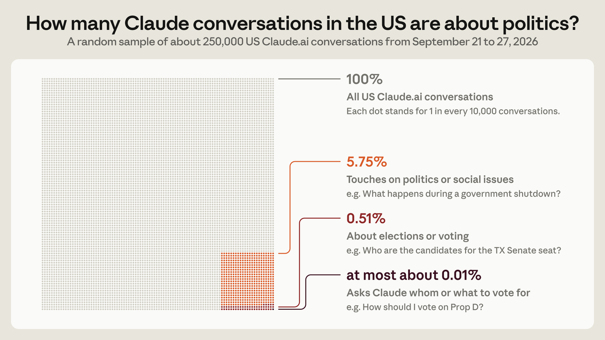
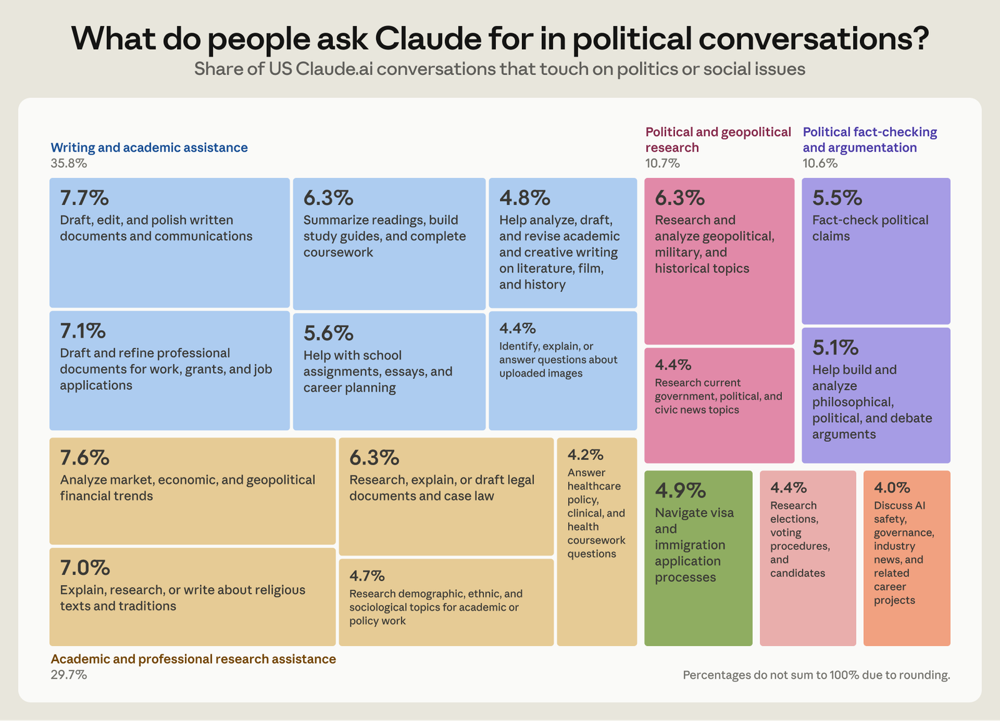
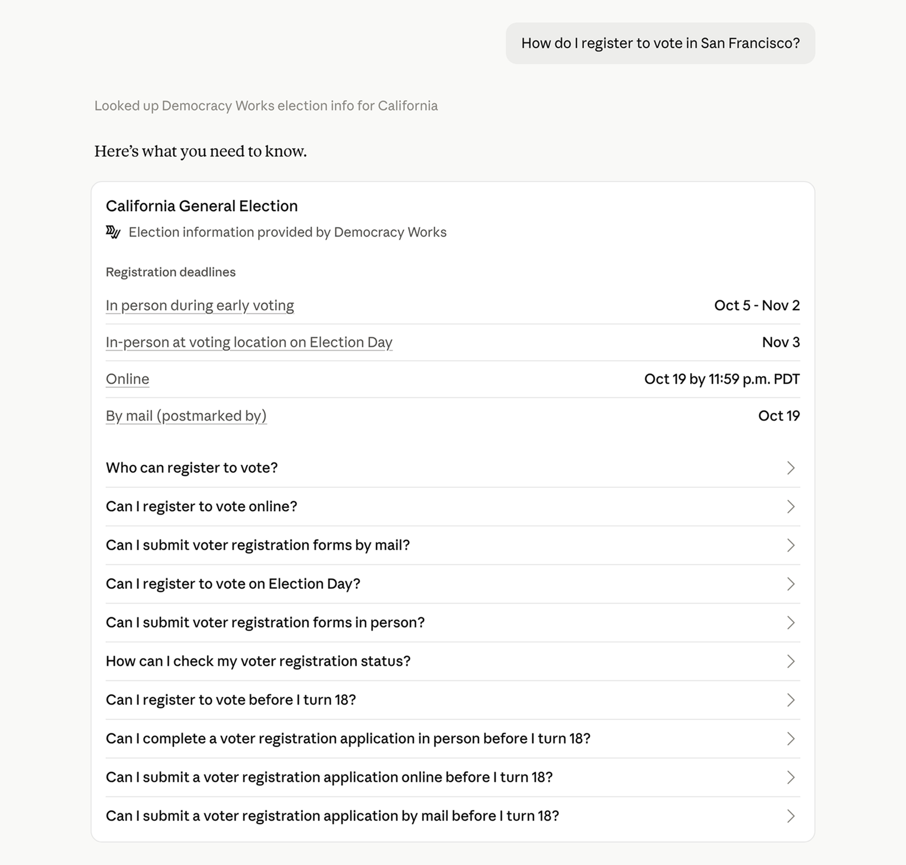

Earlier this year, we shared an update on our election safeguards, which described how we measure and prevent political bias, detect misuse, and direct people to accurate voting information.
Below, we outline how we've built on that work and continued to strengthen our election safeguards ahead of this year’s US midterms.
How people use Claude for elections and politics
Our goal is for Claude to be a useful tool for political conversations, while preventing election-related abuse. That starts with understanding how people actually use Claude in these contexts. To do this, we used Anthropic Insights to develop a new analysis of 250,000 conversations over the course of a recent one-week period.1
Today, conversations that touch broadly on politics, public policy, or social issues account for about 5.75% of all conversations in the United States on Claude.ai, our consumer app. This includes people turning to Claude to follow the news, conduct academic or professional research on public policy, learn about candidates, and navigate government services. About 0.51% of all conversations are specifically about elections or voting. As we get closer to Election Day, we expect the share of political and election-related queries to increase.
This sample suggests people rarely ask Claude whom or what to vote for. These kinds of requests showed up in about 0.01% of US Claude conversations. More often, we observed people asking Claude questions that could help them reach their own conclusions, like where candidates stand on a particular issue. Requests that violated our election integrity policies were even less common, appearing in about 0.002% of conversations.2


Connecting people to trusted sources
Ahead of Election Day, we've added two ways for people to get reliable information directly in their conversations with Claude. As we shared in April, when people ask Claude.ai about voter registration, polling places, or election dates, we’ll continue to display a banner linking to TurboVote, a nonpartisan resource from Democracy Works.
Later this month, Claude will start drawing official voting information from Democracy Works into its responses on Claude.ai for users in the US. Someone asking where to vote or what ID to bring to their polling place will now get an answer specific to their state, without leaving the conversation. These responses draw on publicly available information that Democracy Works collects from state and local election sources.

Additionally, Claude will begin showing up-to-date results on election night and in the days that follow, so that when people ask for current vote counts or election results, they'll be shown the latest official numbers directly in their conversation.
Measuring and preventing political bias
When people ask Claude about politics, they should get accurate and evenhanded answers that don't favor any particular political viewpoint. That’s why we test our models extensively for political bias before every model launch. Claude Opus 5.5, Sonnet 5.5, and Haiku 5.5 are our most evenhanded to date, scoring 99% on our political evenhandedness evaluation. Our latest models also engage more readily with political discussions and decline fewer requests, so people can get the information they came for. We're continuing to refine these evaluations, and also looking beyond them for new ways to pressure-test how our models handle political topics.
As part of that effort, we asked three independent groups to review how Claude handles free expression, each from a different angle with different methodologies. The Future of Free Speech, an independent think tank at Vanderbilt University, tested Claude on hundreds of requests on contentious topics, and the Foundation for American Innovation compared how Claude responded to matched prompts from the left and right, ranging from mainstream policy debates to more extreme scenarios. On both of these evaluations, most of the responses were rated as strong, engaging substantively with requests. The Collective Intelligence Project surveyed more than 2,000 people in the US, UK, and India in developing an evaluation. Through a three-stage process, participants proposed principles for handling sensitive topics, ranging from health to politics, identified topics to test, and helped develop criteria for judging model responses. CIP synthesized this input and tested for agreement across demographic and cultural groups to establish shared principles.
These evaluations also identified areas where Claude still falls short. The Future of Free Speech and the Collective Intelligence Project both found that Claude rarely refused requests, but sometimes added unsolicited caveats and counterarguments, such as inserting an opposing view into an advocacy email. And the Foundation for American Innovation found that Claude Sonnet 4.5 didn’t always hedge evenly, and was more likely to soften arguments for right-leaning positions.
We're addressing this in a few ways. We've improved how Claude responds to direct yes-or-no questions and requests for shorter answers, where we found its answers could be less balanced. We're also using these findings to improve when and how Claude adds caveats or counterarguments, so it treats requests from across the political spectrum more consistently. And we're continuing to improve how we test for uneven hedging, building on existing evaluations that use matched prompts from the left and right. More broadly, we're working to expand our political bias evaluations to better reflect real conversations and to cover candidates and voting questions as well as policy issues.
How we define misuse
Our Usage Policy prohibits using Claude to deceive voters or disrupt elections, from spreading false information about candidates or how to vote, to impersonating election officials or trying to suppress turnout. Each year, we update the policy to reflect our models’ evolving capabilities and feedback from our customers. This year’s update, which we announced last week, clarifies what our election rules cover and what they don't, and adds new examples to help people understand where the lines fall.
We know many political campaigns use Claude for legitimate, everyday tasks, so we recently published a guide to help them understand where these policies apply. It covers the many ways campaigns can put Claude to work, such as drafting press statements and fundraising emails, prepping for debates, analyzing turnout data, and building voter outreach materials. It also spells out what’s prohibited, such as using Claude to create fake social media profiles that pose as real people, mass-producing comments to inflate a campaign’s engagement, or writing content for news sites and pages that falsely claim to be independent.
Testing and strengthening our defenses
We deploy automated classifiers that are trained to detect election-related abuse. To see how these safeguards hold up in practice, we partnered with the Institute for Strategic Dialogue (ISD) and the McCain Institute, both independent research organizations, to pressure-test our protections in the US, Israel, and Brazil. Analysts tested whether Claude would assist with deceptive campaigning, misinformation, and other forms of election abuse. They began with direct requests, then broke full campaigns into smaller tasks that could look harmless on their own, such as audience research, building news sites, drafting content, and planning its distribution. They found that Claude reliably refused a single harmful request, but could miss a malicious campaign when it was spread across many individual requests that looked harmless on their own.
Building on these findings and our own, we've added new classifiers to better identify novel and multi-step misuse, including attempts to build fake social media accounts and news sites aimed at political discussions, or to run financially motivated election schemes. We also enhanced our ability to detect election-related misuse by foreign state actors, and strengthened our cyber protections for election infrastructure and campaigns. Finally, we built targeted safeguards for localized risks identified in the US, Israel, and Brazil, which all have major national elections this year.
Our threat intelligence and enforcement teams review flagged activity and take action when they confirm a violation, including banning accounts. We also routinely share examples of unintended model actions or behavior we've observed during our evaluations and internal use of Claude.
What we've found
Our recent threat intelligence report reflects a broader shift in election-related abuse trends. Political, state-aligned, and commercial actors are now incorporating AI into nearly every aspect of their influence operations, from planning and content creation to building platforms used to disseminate a message. Because we see these early stages of an operation happening on Claude, we often have a chance to stop these efforts before they ever reach the public.
Our teams have continued to investigate and prevent coordinated abuse around elections, including the US midterms. In one case, foreign-based operators of a fake news site used Claude to produce US midterm coverage favoring Russian, Iranian, and North Korean narratives. We've also observed threat actors seeking to exploit the election for financial gain, using Claude to produce fabricated news and other content designed to attract American audiences and generate advertising revenue. We banned the accounts involved in these cases and improved our ability to detect this type of abuse.
Looking ahead
More people are turning to Claude for information about this year’s elections than ever before. We have a responsibility to make sure the answers they get are accurate and balanced, and that Claude isn’t used to undermine the democratic process. We’ll continue to invest in making Claude more evenhanded, preventing and addressing misuse, and being transparent in our actions. This work will be critical in the upcoming US midterms and extends to elections around the world as well. In the coming months, we also hope to share a more comprehensive look at how people used Claude throughout the election cycle, with the goal of strengthening our election-related evaluations and safeguards.